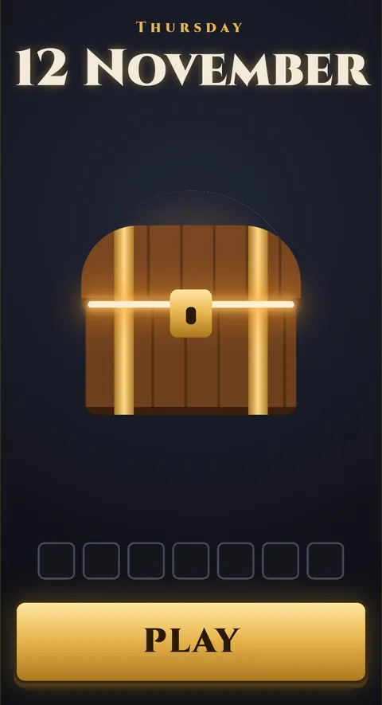
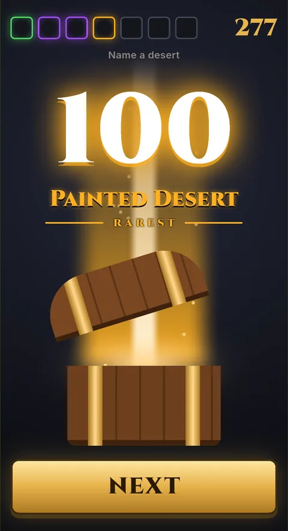
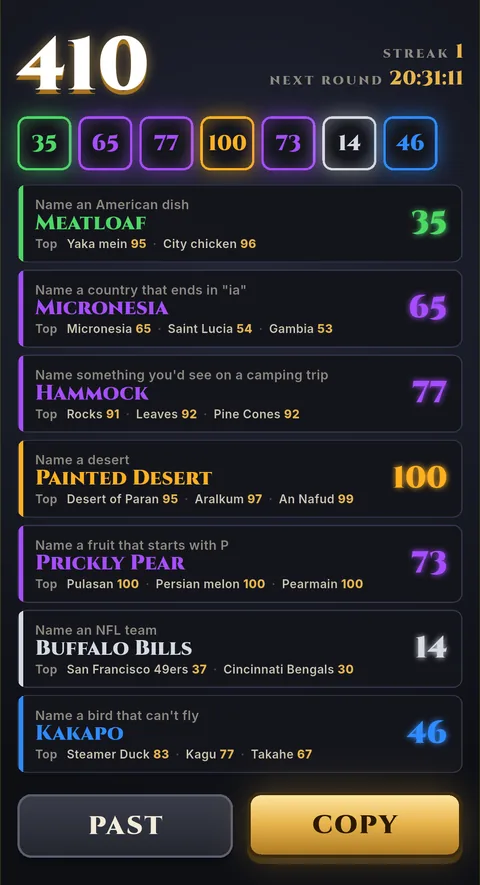

Looking for a Krillion app?
Krillion only plays in a web browser. Rare Answers is the daily rare-answer game made for Android: 7 prompts a day, 25 seconds each, and the rarer your answer, the more it scores.
Free on Android
It's in its Play Store test right now, so getting it takes two taps:
Then install Rare Answers from the Play Store page it opens.



How it plays
- Everyone gets the same 7 prompts each day: name a fruit, a country in Africa, a word that rhymes with "cat"…
- 25 seconds and one answer per prompt.
- Any right answer scores, but rarer ones score more. Banana is fine. Rambutan is better. Up to 100 a prompt, 700 a day.
- Nearly 500,000 answers built in, and small spelling slips still count.
- See the top answers you could have given, keep a streak, and copy your day as a line of coloured squares.
- Plays offline.
Is there a Krillion app?
Not in the Play Store or the App Store. Krillion plays in a web browser. Rare Answers is the same kind of daily rare-answer game, made as an Android app.
Is Rare Answers free?
Yes, free with ads.
Is it on iPhone?
Android only for now.